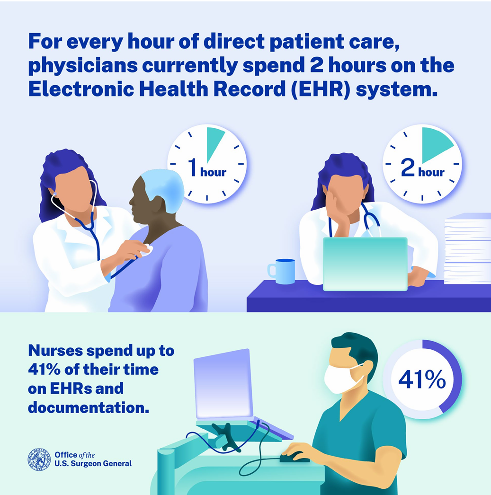
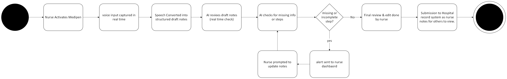

Medipen
Voice-assisted clinical documentation tool for nurses
Problem
Nurses often work in high-pressure, time-sensitive environments where real-time documentation is difficult. During busy shifts, notes can be delayed or incomplete, increasing the risk of missing important clinical details.
User Research
To understand the needs of nurses in clinical environments, I conducted interviews with 2 registered nurses, 2 healthcare professionals, and 4 student nurses. The aim was to identify key challenges related to documentation during busy shifts and explore opportunities for improving workflow efficiency.
Key insights included:
- Nurses struggle to find time for documentation during high-pressure shifts
- A significant portion of their shift is spent on clinical documentation and note-taking
- There is a need for tools that capture clinical details without adding extra steps to existing workflows
In addition to primary research, secondary research was conducted to support these findings. The data highlights the scale of administrative workload in healthcare and reinforces the need for more efficient documentation tools such as Medipen.

Source: The U.S. Surgeon General’s Advisory on Building a Thriving Health Workforce
Healthcare workload statistics (U.S.): Nurses spend up to 41% of their time on EHR/documentation, while physicians spend approximately two hours on EHR tasks for every hour of direct patient care.
Solution
Medipen is a voice-assisted clinical documentation tool designed to support nurses in high-pressure clinical environments by enabling real-time verbal note capture during patient care. These voice notes are automatically transcribed and structured into draft documentation for later review and submission, with integration into the Epic Rover application to ensure seamless alignment with existing clinical workflows.
How It Works
Workflow Diagram

This workflow was designed to align with real clinical environments where nurses must prioritise patient care over documentation. By shifting note-taking into a passive, voice-driven process, Medipen reduces cognitive load during high-pressure situations.
A mandatory review step ensures that all generated notes are verified by the nurse before submission, maintaining clinical accuracy and accountability.
Key Features
- Real-time voice-to-text clinical note drafting
- Structured documentation generation
- Review-and-edit workflow before submission
- Smart prompts for missing or critical actions
- Designed to reduce cognitive load during shifts
Design Intent
Medipen was designed to reduce documentation pressure on nurses while improving accuracy and consistency in clinical records. It supports workflow efficiency without replacing professional judgement.
Future Consideration
Further development would require exploration of medical compliance, transcription accuracy in clinical environments, and integration with hospital record systems. Usability in fast-paced, high-stress conditions would also need testing.
Reflection
What I learned:
- Designing for healthcare made me realise how important speed and simplicity are when people are under pressure.
- I didn’t fully appreciate how much documentation affects daily workflow until I looked into it.
- Real-time tools need to support users in the moment, not slow them down.
Skills developed:
- Thinking through how a tool would actually fit into a busy work environment.
- Breaking a complex process into simple steps that are easy to follow.
- Using research to back up design decisions instead of just guessing.
- Considering what could realistically go wrong in a real-world setting.
Next Steps:
- With more time, id like to turn this itno a working protoype to test how it would actually perform in a real clinical setting.
- i would also explore building an interactive version to explore how hou nurses would respond to it in picture.